ignition-center（HEAD 86059d3 + 工作树 30 文件改动，含 v1.1.1 批与 DEF-01/02 修复）；O-CLC cluster-center-mcc（HEAD ae41e9b + 工作树 19 文件改动）。工作树未提交（遵用户指令：未经要求不提交）。3.200 上部署的镜像即由该工作树构建。/etc/kubeasz/ezctl → ansible 落到真节点 172.28.0.12 → 步骤终态回填 → clc 成功落点回写（集群 RUNNING / 登记节点 ADDED）→ 探活翻转 HEALTHY。opic-ign-app（ubuntu 24.04 · uid 10001 app · 装整包 ansible 9.2.0 / core 2.16.3）；命令面 /etc/kubeasz/ezctl（宿主目录 bind 挂载）；工作根 /etc/kubeasz；SSH 登录用户经 IGN_DELIVERY_SSH_USER 注入 ansible_ssh_user。kasz-node2 = 172.28.0.12（特权 systemd 容器，Ubuntu 24.04.5 · 容器内 systemd 正常）；node1（172.28.0.11 / kasz-lab）为既有活体环境，本轮未触碰。evidence/p3-20261007/；节点侧命令原文记录同目录 raw-evidence.txt。结论：P3 通过。「clc 界面发起 → ign 门面受理 → 真 kubeasz 装机」三段在真节点上端到端跑通，且交付出的集群经功能探针验证可用（集群内 DNS 解析、kube-proxy Service 路由均实测通过，见 TC-10）。本轮全部阻塞点都定位在执行位能力面与节点先决条件（ansible collections、非 root 建链、kmod/dbus、Docker bind mount 原子写、nginx stream 模块），修复落在镜像与部署侧，没有为通过测试而改动业务口径。
两域口径一致性同步得到实测佐证：同一个安装动作在 clc 侧是 1 条任务 7 个步骤，在 ign 侧是 7 条 ezctl.setup 任务，双向由「来源任务标识 + 来源步骤序号」互查（门面 · TSK-20261007-0009 / 第 N 步），与裁定 Q-69 / Q-70 / Q-72 完全一致。
| 编号 | 用例 | 断言点（模型/规则锚） | 结果 | 取证 |
|---|---|---|---|---|
| TC-P3-01 | 界面登记集群并写入节点清单 | AGG-CLC-01/02；节点 PENDING 且带 IP 唯一(INV-10) | 通过 | 截图 01 |
| TC-P3-02 | 界面发起 INSTALL 并按 01~07 展开步骤 | FUNC-03；B-AUTO 步骤权威在 O-CLC（Q-69） | 通过 | 截图 03、04 |
| TC-P3-03 | 每步经门面受理并携带登记事实 | FUNC-34；R-19 受理携带事实；Q-72 节点进请求体 | 通过 | 截图 05、12 |
| TC-P3-04 | ign 侧 7 条子任务终态与结论依据正确 | 成功=COMPLETED；结论优先 PLAY_RECAP（R-09） | 通过 | 截图 08、09 |
| TC-P3-05 | 步骤日志区间与 SSE 回放只读一致 | REP-12 c1~c9；日志行不独立编号（Q-72） | 通过 | 截图 05 |
| TC-P3-06 | 成功落点回写：集群 RUNNING、登记节点 ADDED + k8s 节点名 | B-AUTO-09；INV-14 派生节点名 | 通过 | 截图 02、06 |
| TC-P3-07 | 引用台账双写（执行机 / 交付版本） | R-01 双写 | 通过 | 截图 02、10 |
| TC-P3-08 | 人工登记探活按阈值翻转健康 | R-08 防抖；REF-03/REF-11 阈值；INV-34 | 通过 | 截图 07 |
| TC-P3-09 | kubectl get pod -A 真实回读 | 集群实际可用（用户验收要求） | 通过 | §5 [A][B] |
| TC-P3-10 | 集群内 DNS + Service 路由功能探针 | Suffix/Service 网段与交付配置一致 | 通过 | §5 [C] |
| TC-P3-11 | 失败重试留痕可查（历史 6 条失败任务） | 失败终态、失败步骤、结论依据可回溯 | 通过 | 截图 03、08 |
opic-ign-app 已挂载真 /etc/kubeasz；kasz-node2(172.28.0.12) 已装 kmod/dbus、解除 systemd-modules-load mask、/etc/hosts 与 /etc/hostname 脱离 bind mount；ign 容器已接入 opic-k8s-lab 网络 172.28.0.13 并由 sidecar 提供 :5000 镜像仓库。
步骤① 用户工作台「集群台账」新建集群：p3-real-k8s-000118、运行模式=中心引用模式、DNS 域名 p3-lab.local、版本引用 VER-20261006-0001、执行机引用 EXE-20261004-0001、登记 1 个控制面节点 172.28.0.12；② 详情 → 发起「安装」；③ 任务台账观察 7 步推进；④ 回读集群详情与节点台账。
实测集群 CLU-20261007-0001 = RUNNING / 健康；节点 NOD-20261007-0001 = 已加入、k8s 节点名 clu-20261007-0001-172-28-0-12（INV-14 派生口径）、健康；引用台账双写执行机与交付版本两条；最近任务 TSK-20261007-0009 INSTALL SUCCEEDED。
判定通过 登记事实到交付事实再回写台账的闭环成立，且全程界面发起、无接口桩。
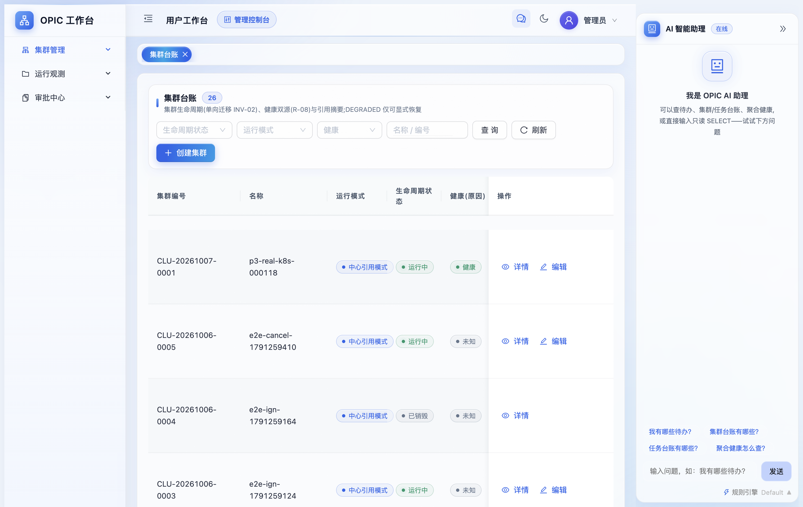
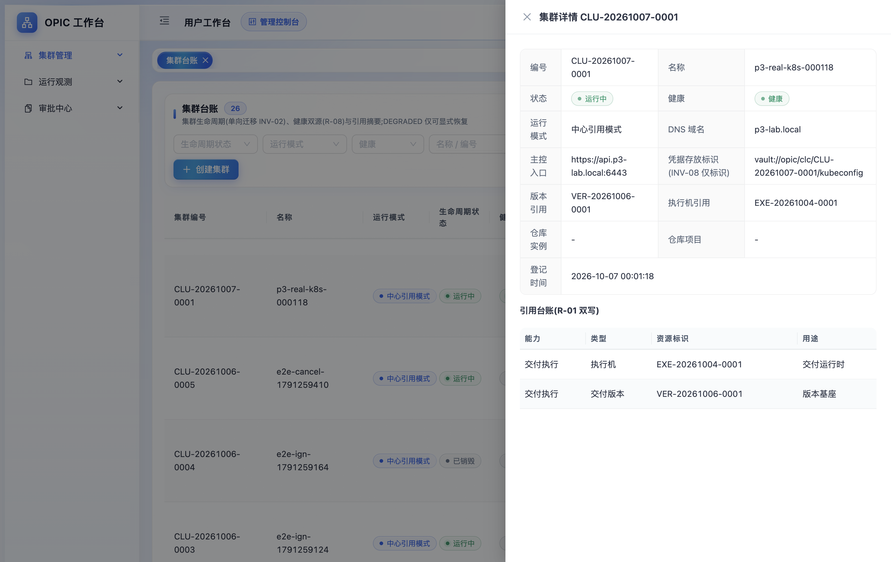
https://api.p3-lab.local:6443、凭据标识(INV-08 仅标识)、引用台账 R-01 双写两条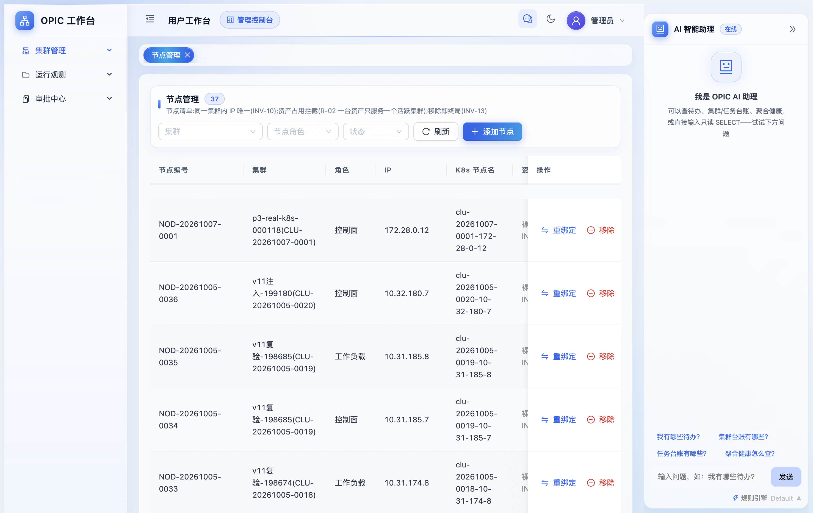
setup CLU-20261007-0001 04；日志区间 #2~#15 连续、游标右界 #16；回放面板显式声明「远程链路的执行侧原始日志留存于交付域(O-IGN)，本面板仅回放本域登记的交付日志(REF-12)」—— 两域日志不互相复制事实。
对照04（控制面）耗时 00:47:00~00:49:50，与 ign 侧该子任务 169 秒、229 行原始日志一致；05（加工作节点）仅 5 秒，因为生成的 hosts 清单里 [kube_node] 组就是同一台 172.28.0.12（单机同时登记为 etcd/master/node，见 §5 [E] 原文）。
判定通过 步骤状态机权威确在 O-CLC，ign 只把 ezctl.setup 的参数当合法域（Q-69）。
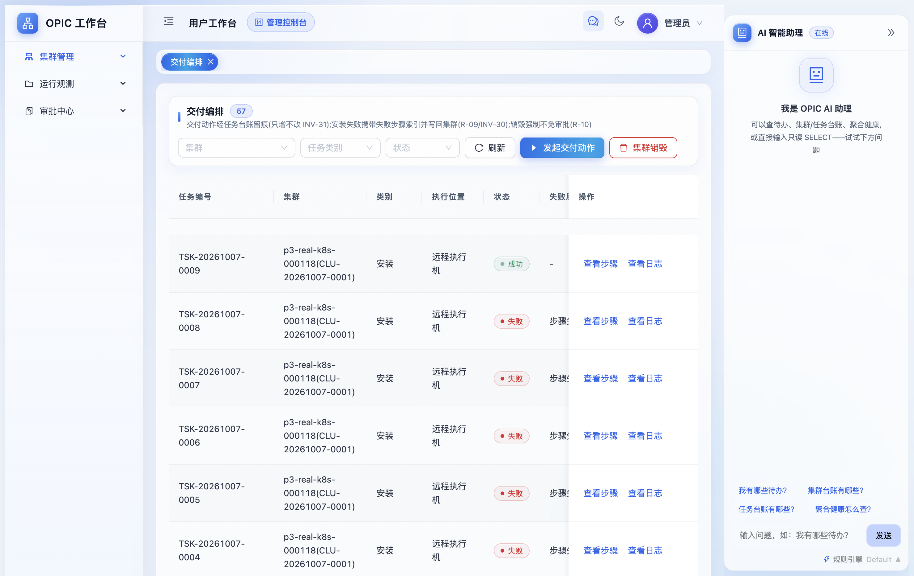
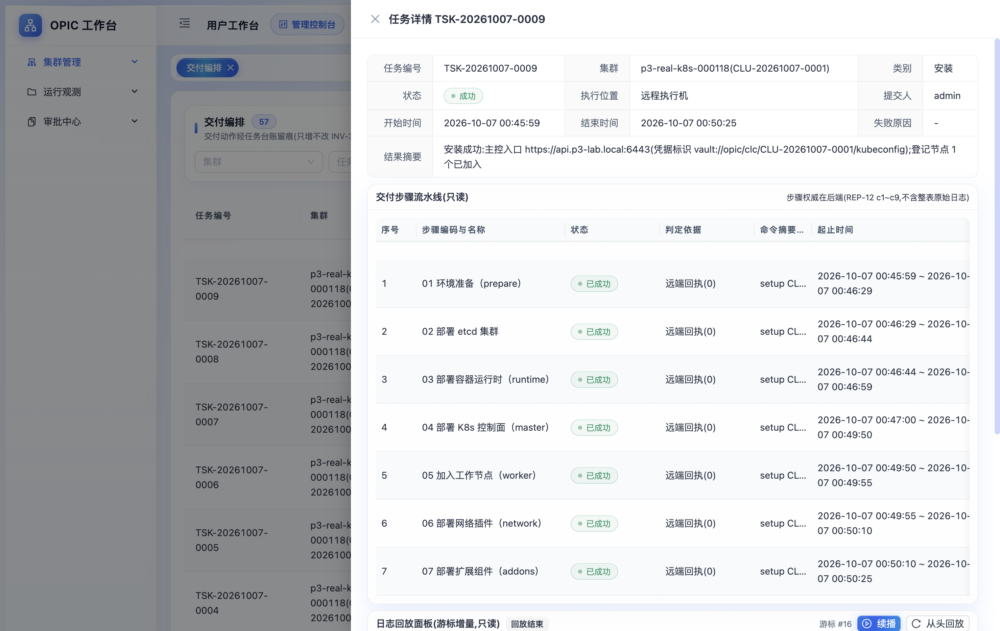
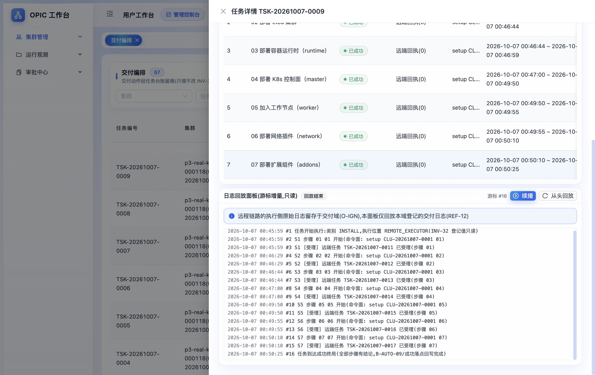
/etc/kubeasz/ezctl、工作根 /etc/kubeasz 界面只读并注明「改它走部署、不走界面」。门面受理台账 7 条 ezctl.setup，来源列统一为「门面 · TSK-20261007-0009 / 第 N 步」；结论依据分布 EXIT_CODE 36 / PLAY_RECAP 25 / TRACE_LOST 2，其中本轮成功步全部标「剧本汇总判定（优先于退出码）」；子任务 0014 尾部原文 172.28.0.12 : ok=57 changed=49 unreachable=0 failed=0 skipped=4 + 终态回填：COMPLETED / 结论依据 PLAY_RECAP / 剧本汇总：1 个执行面主机，0 个失败/不可达。组件版本横幅 kubernetes v1.36.3 / etcd v3.7.1 / flannel v0.28.9 与交付版本台账登记一致。
留痕失败子任务（如 TSK-20261007-0010 · 04 步 · nginx stream 模块缺失，标注 EXECUTOR_ERROR）与上游 6 条失败安装任务 TSK-20261007-0003~0008（失败步骤 1/4）在两侧台账均可查、可点开日志，重试未被吞史；0003~0007 停在第 1 步（执行位登录与节点先决条件），0008 停在第 4 步（kube-lb 的 nginx stream 模块缺失）。
判定通过 幂等键=来源任务标识+来源步骤序号在界面上直接可读，跨域反查闭环；执行位容器自身即真 kubeasz 控制机（Q-68）。
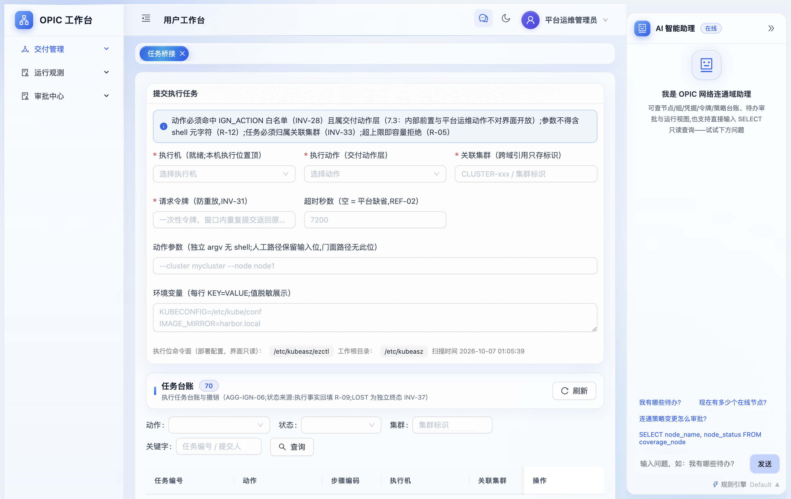
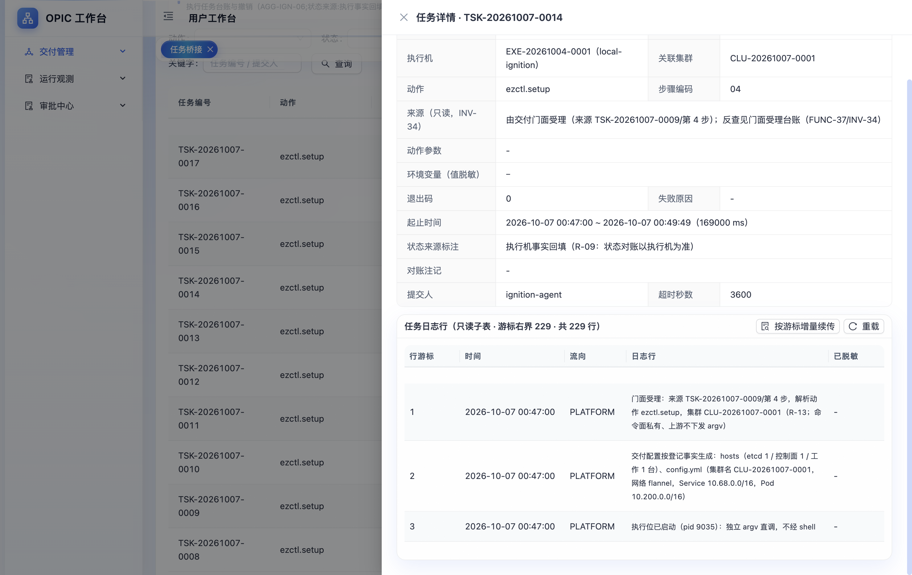
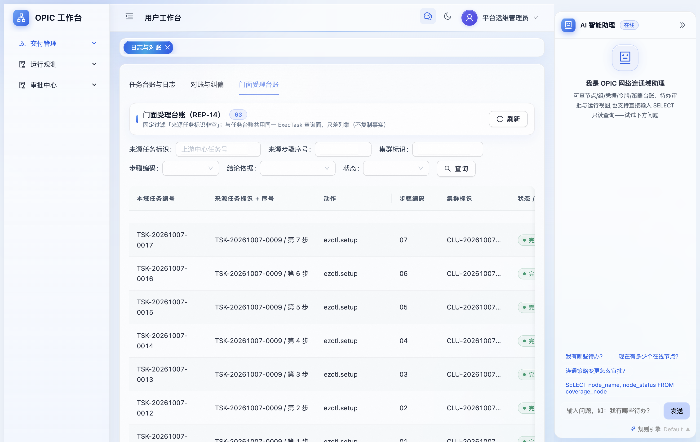
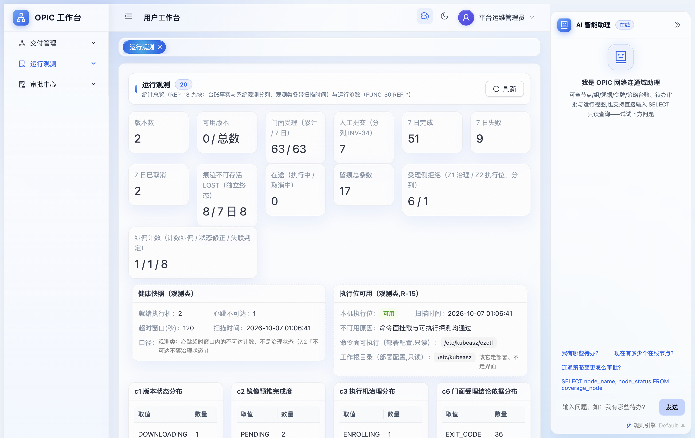
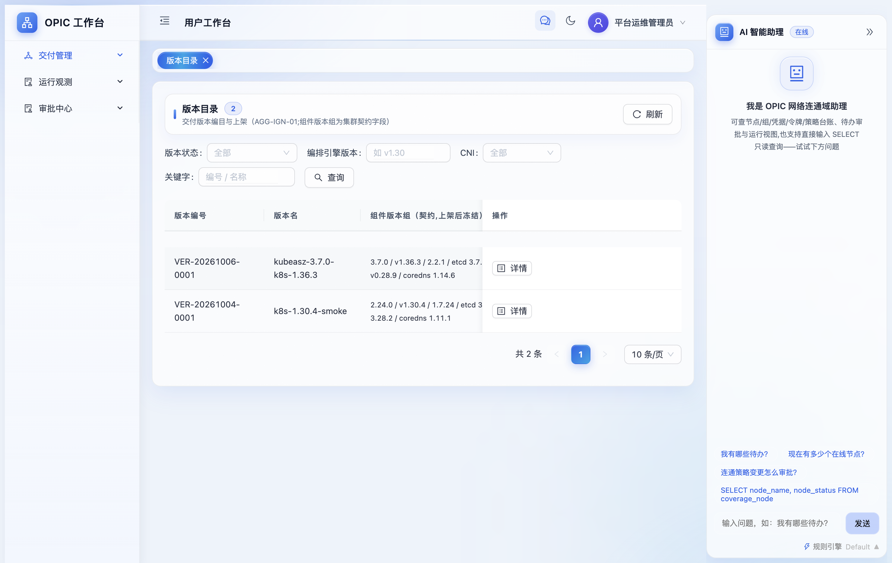
kubeasz-3.7.0-k8s-1.36.3，组件版本组与本轮装机日志逐项吻合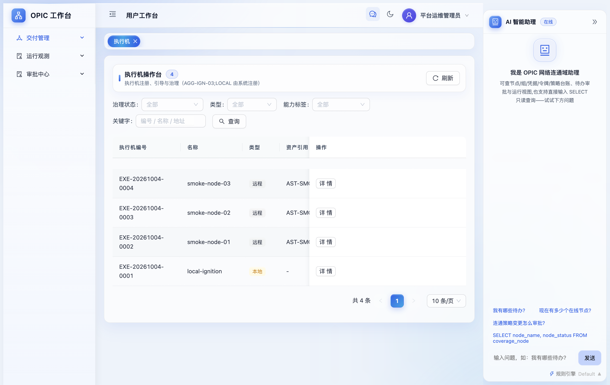
EXE-20261004-0001 local-ignition（本地 · 就绪 · 上限 4 · 能力标签 DEPLOY/SKOPEO/BACKUP/PREFLIGHT/OFFLINE）VER-20261006-0001 状态仍为「草稿」，运行观测的「可用版本 0/2」也为此值；本轮安装能成功是因为命令面用的是控制机上已就位的 kubeasz 3.7.0，版本台账只承担登记与契约（组件版本组冻结）。是否需要「非可用版本不得被交付引用」的前置校验，模型里目前没有这条规则 —— 不擅自补，作为待裁定项列出（见 §8）。〔同日续记〕该项已由用户裁定「处理」并落为 O-IGN v1.2 批的 R-19 门槛 —— 处置口径、证据与后果见 §8 末段；本用例取证时的放行行为属改版前事实，保留不回改。kubectl get --raw /readyz）与 Ready 节点数，再按实测值登记人工探活；连续三轮后查聚合健康页。
实测连续登记成功探活共 4 条记录（00:52:31 / 00:53:35 / 00:53:36 / 00:53:37，结论均 HEALTHY），集群健康在连续成功数达到恢复阈值时由 UNKNOWN 翻转 HEALTHY —— 阈值实测配置值：clc.probe_recover_threshold=3(REF-11)、clc.probe_fail_threshold=3(REF-03)；聚合健康行：p3-real-k8s-000118(CLU-20261007-0001) · RUNNING · 健康 · EXE-20261004-0001 · 节点资产 1/1 · 最近探活 2026-10-07 00:53:37。
判定通过 探活是「人工登记 + 防抖」口径（非自动探测），本轮登记值全部来自实测，未填乐观值。
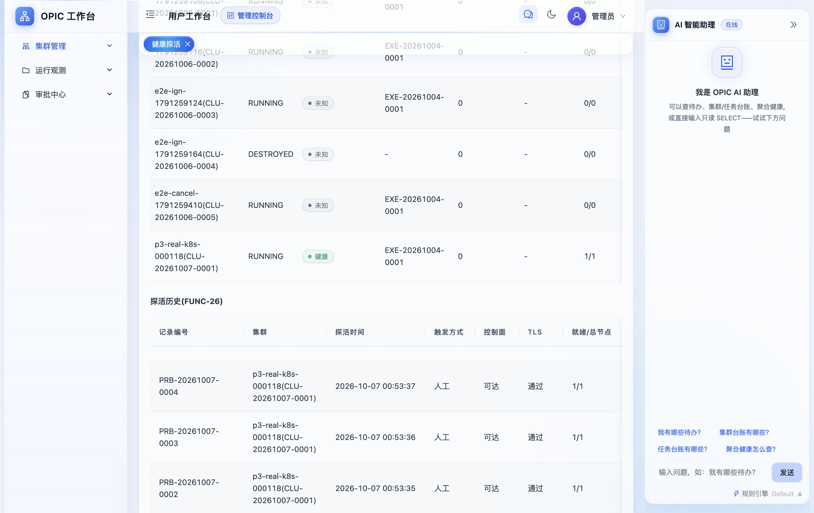
kasz-node2 上执行 kubectl get pod -A -o wide 与 get nodes -o wide；② 用内网仓库里的 busybox 起一次性 Pod，在 Pod 内 nslookup kubernetes.default.svc.cluster.local、nc -zv 10.68.0.1 443；③ 控制机侧 kubectl get --raw /readyz 与 kubectl top nodes；④ 探针 Pod 用完即删。
实测见 §5 原文：4 个系统 Pod 全 1/1 Running；节点 Ready / master / v1.36.3 / containerd://2.2.1；DNS 解析出 10.68.0.1、Service 端口 open；/readyz=ok；top nodes 有真实数值。
判定通过 交付物是一个可用集群，不只是状态机绿灯。
取数位置：集群控制机 192.168.3.200；[A][B][C] 在节点容器 kasz-node2（172.28.0.12）内执行，kubectl 位于 /opt/kube/bin（需显式注入 PATH）；[D] 在 opic-ign-app 容器与节点侧用 admin.conf 执行。原文同步存 evidence/p3-20261007/raw-evidence.txt。
| 事实 | 影响 | 处置 |
|---|---|---|
opic-ign-app 每次 recreate 后需重放：
docker network connect --ip 172.28.0.13 opic-k8s-lab opic-ign-app；
重建镜像仓库 sidecar：docker rm -f opic-ign-mirror && docker run -d --name opic-ign-mirror --restart unless-stopped --network container:opic-ign-app -v /opt/kube/registry:/var/lib/registry:ro registry:2 |
不重放则 01~07 在 prepare 步（easzlab.io.local 写入）与 addon 拉镜像（easzlab.io.local:5000/… 硬编码）处失败 |
部署侧手工步骤 属环境装配，不进代码；生产化应下沉到 compose/部署清单（待后续） |
compose 起停须先 set -a; . /opt/opic-prod/.env; set +a 再 docker compose up -d | 否则 NATS_PASSWORD / PG_ADMIN_PASSWORD 缺失导致插值失败 | 操作口径 |
node2 的 umount /etc/hosts、umount /etc/hostname 修复在容器重启后失效（Docker 会重新 bind mount） | ansible 原子 rename 报 [Errno 16] Device or resource busy，01 步必失败 | 已知回归点 控制器侧 ANSIBLE_UNSAFE_WRITES 已实测无效（变量在目标机求值）；生产形态应使用真实主机而非 Docker bind-mount 节点 |
node2 需 apt-get install kmod dbus + systemctl unmask systemd-modules-load + 存在 /usr/lib/nginx/modules/ngx_stream_module.so | 缺任一项分别在 01（modprobe）与 04（kube-lb dlopen）失败 | 节点先决条件 已在 06 报告失败留痕中逐条命中 |
旧集群目录 /etc/kubeasz/clusters/CLU-20261007-0001（换 SSH 用户前生成）被 mv 至 /tmp/kubeasz-quarantine/CLU-20261007-0001-pre-sshuser，未删除 | 接管标记 .ign-delivery.json 命中即幂等复用，不会重生成 hosts —— 变更 SSH 用户后必须清理才能生效 | 可回滚 隔离区文件保留 |
运行镜像从 alpine → ubuntu 24.04，且装整包 ansible（非 ansible-core）并在构建期预建 /usr/bin/ezctl、/usr/bin/ezdown 软链 | 裸 core 缺 ansible.posix/community.general（pam_limits/sysctl/modprobe）在 01 步即退 1；01 末的控制机本地建链任务对非 root 会 EACCES | 已入库（本地工作树） 未提交；版本与 3.200 宿主同源（ansible 9.2.0 / core 2.16.3） |
compose 新增 IGN_DELIVERY_SSH_USER 透传行 | 不透传则命令面用容器进程用户 app 登录节点，Permission denied (publickey) | 已入库（本地工作树） 未提交 |
问题：集群内 DNS 后缀（REF-19 deploy_dns_domain=cluster.local）与上游登记的「访问端点域名」（clc_cluster.cluster_dns_domain = p3-lab.local）是否同源？若同源，需把端点域名扩进 FUNC-34 请求体让 ign 生成 config.yml 时使用；若不同源，二者各管各的。
裁定（2026-10-07，用户「按 AI 建议处理」）：判「不同源」，FUNC-34 请求体不扩该列。判据 3) 是决定性的 —— kubeconfig 的 server: 走 master 地址，端点域名与本域后缀本来就两条轴：上游那个值是 O-CLC 按自身登记字段 cluster_dns_domain 派生的台账/证书形态值，ign 侧 REF-19 只决定集群内 CLUSTER_DNS_DOMAIN 落盘。故判据 4) 的不可解析不属"因后缀不一致而不可解析"（传后缀也解决不了：需要外部 DNS / VIP，或非 HA 单 master 场景直接用 IP），Q-73 预设的再审触发条件不成立。代价如实登记：非 HA 单 master 台账展示的端点域名不可直接解析，属部署事实而非模型缺陷。
收口落点（零业务逻辑改动）：① 两域 .md 事实源 —— O-IGN 侧正文 REF-19 边界段与《编制说明》E.1 该行由 [待确认] 改 [已确认]（含本节五项证据），O-CLC 侧正文 R-19 下方 ADD_NODE 偏差注记的同批联动项裁定为不改全量重派；② 本体 M3 REF-19 description（models/ 与 design/yaml/ 两份同步）；③ ign 运行观测 /ign/ops 的 REF-19 参数说明文案（3.200 上镜像仍是旧文案，未随本次重部署，需要时另行部署）。代码侧核实：clc submitReq 结构体本就没有该字段 ⇒ 与裁定一致，无需改动。
连带项状态：两域共 4 份 HTML 交付件已随本收口批按 v1.1.1 重导（重导与校验记录见两域《编制说明》E.4）。本收口批不含 OBS-P3-01 的裁定；该观测已于同日按用户裁定「处理」并在 O-IGN 侧升版 v1.2 重导两份 HTML —— 处置记录见 §8 末段。
| 项 | 说明 | 性质 |
|---|---|---|
| 单控制面、无 HA/VIP | 本轮只登记 1 个控制面节点，未验证多 master、api 域名 + LB 漂移，也未验证 kubeasz 08 之后的扩容/升级/拆除族 | 未覆盖 |
| UPGRADE / BACKUP / RESTORE / STOP / START / DESTROY 的真机路径 | 状态机与门面无头测试已覆盖，真 kubeasz 上本轮只跑了 INSTALL 族；DESTROY 未对活体真集群执行（破坏性动作按约定不做默认动作） | 未覆盖 |
| 交付版本状态前置校验 | 引用的 VER-20261006-0001 为草稿仍可被交付（见 OBS-P3-01）；本报告所测镜像不含该门槛 —— 门槛于同日 v1.2 批落地（R-19），需重部署后方在 3.200 生效 | 已处理 |
| Docker 型节点的可重复性 | bind-mount 的 /etc/hosts、/etc/hostname 问题属测试夹具形态限制；生产应落在真机/虚机节点 | 环境限制 |
| 低危 DEF-03 / DEF-04 | AI 助理欢迎语底座残留、登录页底座文案；用户未要求处理，仍未改 | 挂起 |
| 提交状态 | 两仓工作树改动（ign 30 / clc 19 文件）未 add、未 commit、未 push；本报告与截图、原始取证文件同属交付物，未入库 | 遵指令 |
OBS-P3-01 处置记录（2026-10-07 同日续记，用户裁定「处理」）：按 spec → 本体 → 代码 顺序落地为跨对象规则 R-19 交付版本引用的可用性门槛 —— 安装族受理携带的交付版本引用，除「目录内可解析」（INV-33）外须命中未归档且就绪及之后（就绪 / 预推中 / 已预推 / 部分预推放行；草稿 / 下载中 / 失败 / 已归档 ⇒ 治理拒绝 SYS9103，不建任务行、不占容量、留痕进门面受理台账）。判据不是本域自创：上游 O-CLC 的 REF-05 早已声明同一门槛，本域此前只校验可解析、未校验可用，属两域口径缺口的收口。落点：O-IGN 正文 3.3.3 / 3.3.4 / 3.4 与《编制说明》A.2 / C.2 / D.2 / E.2.3 / E.3、M3 R-19 与 M2 FUNC-34 前置条件（models/ 与 design/yaml/ 两份同步）、受理侧版本引用解析路径（go build / go vet / go test ./internal/... 全绿，新增 4 条用例覆盖「READY 放行 + 派生组件版本面」「四种不可用状态各自拒绝」「未登记走 INV-33 口径」「门面端到端拒绝且不留任务行」）。
必须如实说明的后果：本域阶段三不代理真实下载通道（B-AUTO-01 未接入），故「就绪」状态在当前环境无法经应用推进达成 ⇒ 重部署后，引用草稿 / 下载中版本的新装机会被治理拒绝；已建成的 CLU-20261007-0001 不受影响（节点增删 / 销毁族不带版本面，且引用为空的路径不触门槛）。跨中心可选池（FUNC-08 / REP-03 只出已预推与部分预推）比门槛更窄，方向安全，本域不改该池口径。